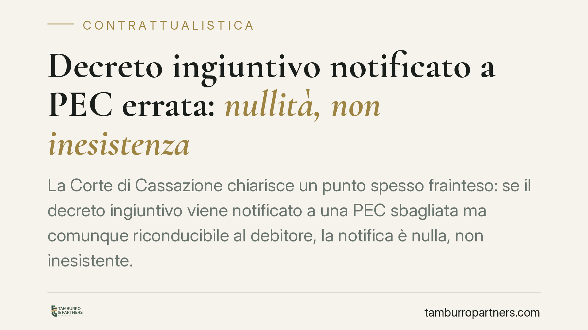

Decreto ingiuntivo notificato a PEC errata: nullità, non inesistenza
La Corte di Cassazione chiarisce un punto spesso frainteso: se il decreto ingiuntivo viene notificato a una PEC sbagliata ma comunque riconducibile al debitore, la notifica è nulla, non inesistente. La differenza non è teorica: determina il rimedio da attivare e i tempi per farlo. Sbagliare strada processuale significa rischiare di consolidare un titolo che poteva essere contestato.

Il caso e la decisione
Una società destinataria di un decreto ingiuntivo lamentava che la notifica fosse avvenuta a un indirizzo PEC non corretto. La tesi difensiva puntava a far dichiarare l'atto del tutto improduttivo di effetti, come se non fosse mai esistito.
La Cassazione ha respinto questa impostazione. Quando la PEC è errata ma resta riferibile al debitore — perché a lui intestata o comunque collegata alla sua sfera organizzativa — la notifica non è inesistente, ma nulla. E la nullità, a differenza dell'inesistenza, è sanabile e segue regole diverse quanto ai rimedi e ai termini.
Inquadramento normativo
La distinzione tra notifica nulla e notifica inesistente è stata delineata dalle Sezioni Unite della Cassazione (sent. n. 14916/2016): l'inesistenza ricorre solo in casi estremi, quando manca del tutto un collegamento con il destinatario o con un luogo a lui riferibile. Fuori da queste ipotesi si versa nella nullità, che non azzera l'atto ma lo rende impugnabile con gli strumenti ordinari.
Applicata al decreto ingiuntivo, questa qualificazione indirizza verso un rimedio preciso: l'opposizione tardiva prevista dall'art. 650 c.p.c. Secondo questa norma, chi non ha avuto tempestiva conoscenza del decreto per irregolarità della notifica, caso fortuito o forza maggiore può proporre opposizione anche dopo la scadenza del termine ordinario.
Due precisazioni sui tempi, spesso confuse:
- l'art. 650 c.p.c. non fissa in modo esplicito il termine per proporre l'opposizione tardiva; esso è individuato in via interpretativa a partire dal momento in cui il debitore ha avuto effettiva conoscenza del provvedimento. Non si applicano automaticamente i quaranta giorni dell'opposizione ordinaria;
- esiste però uno sbarramento finale: ai sensi dell'art. 650, comma 3, c.p.c., l'opposizione non è più ammessa decorsi dieci giorni dal primo atto di esecuzione. È il limite ultimo oltre il quale il titolo si consolida.
Resta fermo che l'opposizione ordinaria al decreto ingiuntivo è disciplinata dall'art. 645 c.p.c. L'opposizione tardiva dell'art. 650 è l'eccezione che consente di recuperare la difesa quando la notifica viziata ha impedito la tempestiva reazione.
Perché l'opposizione all'esecuzione non è la strada giusta
L'errore tipico è reagire con l'opposizione all'esecuzione ex art. 615 c.p.c. Ma quel rimedio serve a contestare il diritto del creditore di procedere esecutivamente, non i vizi del titolo o della sua notifica. Se il problema è che il decreto non è stato correttamente portato a conoscenza del debitore, il terreno di gioco è l'art. 650 c.p.c., non l'art. 615.
Scegliere lo strumento sbagliato espone a una pronuncia di inammissibilità e, nel frattempo, lascia maturare lo sbarramento dei dieci giorni. Il debito, contestabile nel merito, rischia così di cristallizzarsi per una questione di rito.
Implicazioni pratiche
Per imprese e professionisti il messaggio operativo è chiaro: una PEC non più in uso, ma ancora formalmente associata al soggetto — perché mai cancellata dagli indici pubblici o dai registri — può diventare il canale attraverso cui arriva una notifica valida sul piano della riferibilità, pur se irregolare.
Non basta aver dismesso un indirizzo: finché resta collegato alla posizione del destinatario, le comunicazioni che vi affluiscono possono produrre effetti. Il monitoraggio delle caselle PEC, anche di quelle che si ritengono superate, è quindi parte integrante della gestione del rischio.
Cosa fare in concreto
- Monitorate tutte le PEC riconducibili alla vostra posizione, comprese quelle non più operative ma ancora iscritte in registri o indici pubblici (INI-PEC, visure camerali).
- Allineate e aggiornate i registri pubblici cancellando formalmente gli indirizzi dismessi e comunicando quelli attivi.
- Di fronte a un decreto ingiuntivo notificato a PEC errata, verificate subito se l'indirizzo è comunque riferibile a voi: da questa qualificazione dipende il rimedio.
- Se la notifica è nulla, valutate l'opposizione tardiva ex art. 650 c.p.c. agendo con la massima tempestività dalla scoperta e prima dello sbarramento dei dieci giorni dal primo atto esecutivo.
- Non ripiegate per abitudine sull'opposizione all'esecuzione ex art. 615 c.p.c.: per i vizi del titolo e della notifica la strada corretta resta l'art. 650 c.p.c., mentre l'opposizione ordinaria è quella dell'art. 645 c.p.c.
La differenza tra nullità e inesistenza non è un tecnicismo: incide direttamente sulla possibilità concreta di difendersi. Un'analisi tempestiva della notifica e della sua riferibilità è il presupposto di ogni strategia processuale efficace.
Ogni contratto ha il suo equilibrio.
Se vuoi una revisione delle clausole o una redazione su misura, scrivi allo studio. Ti rispondiamo entro un giorno lavorativo.